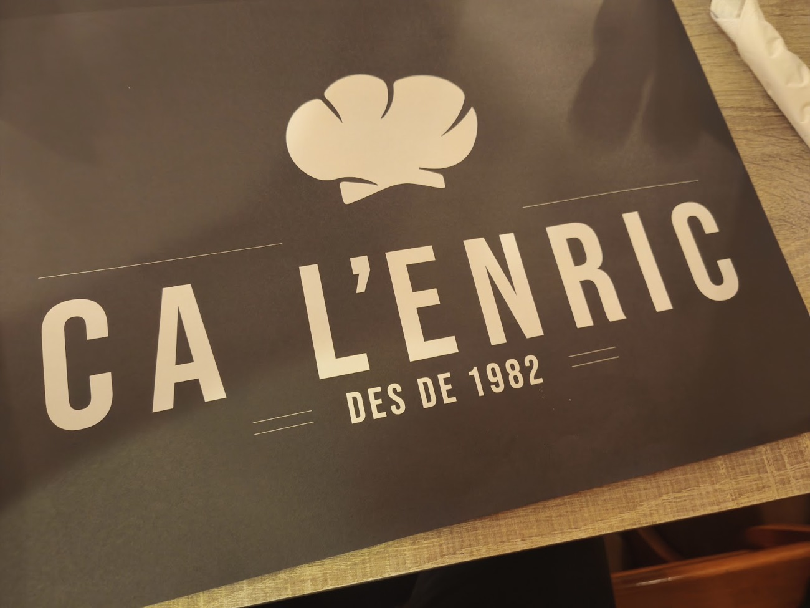
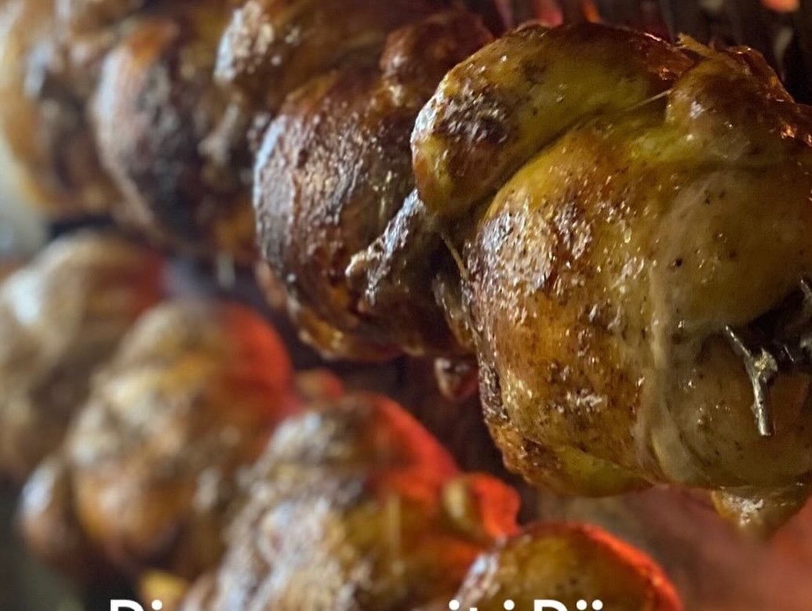
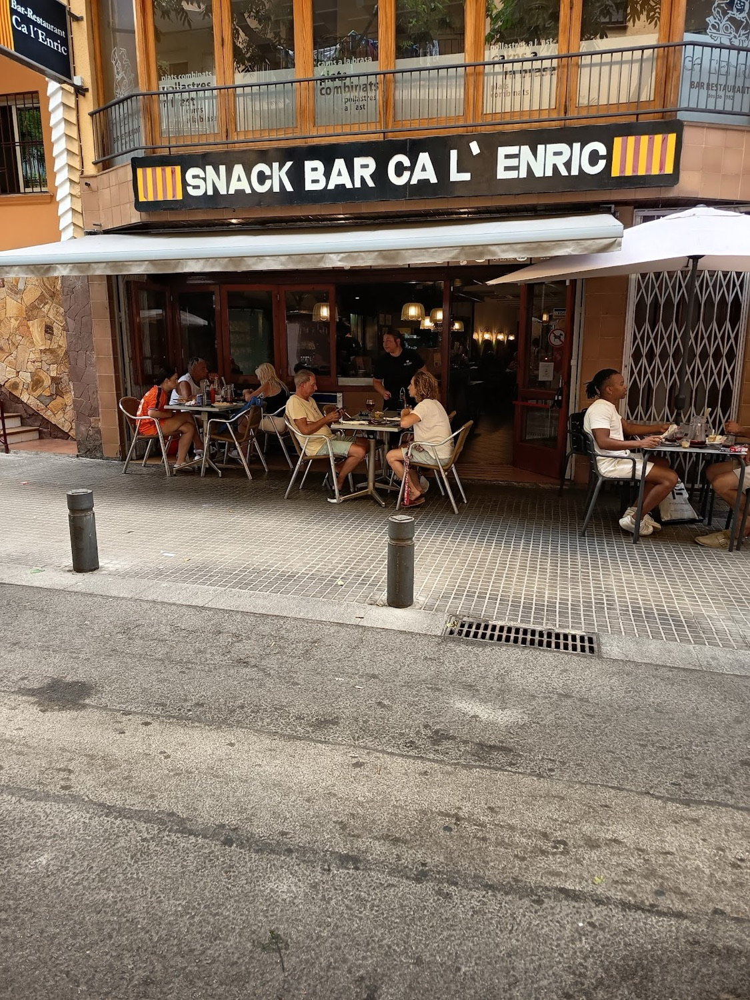
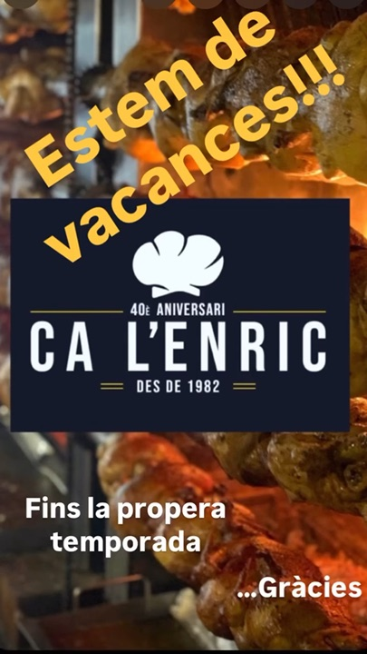
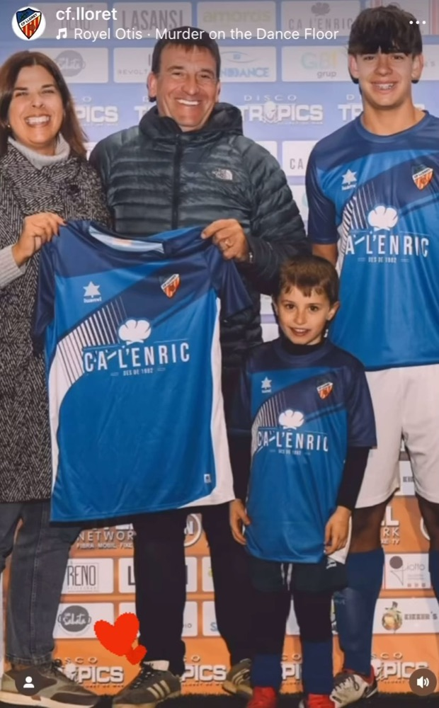
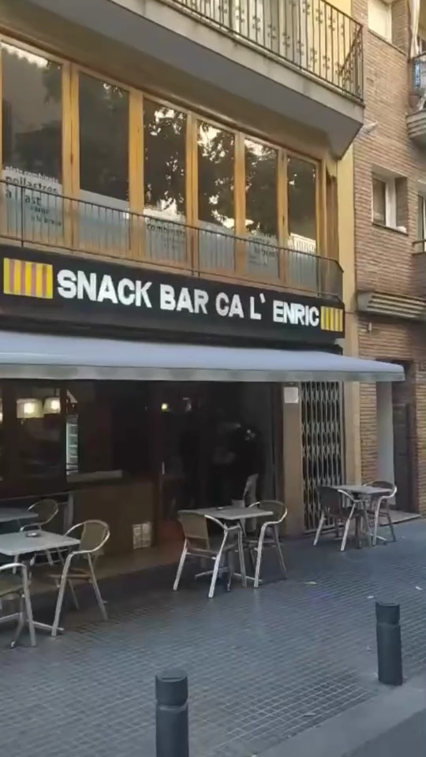
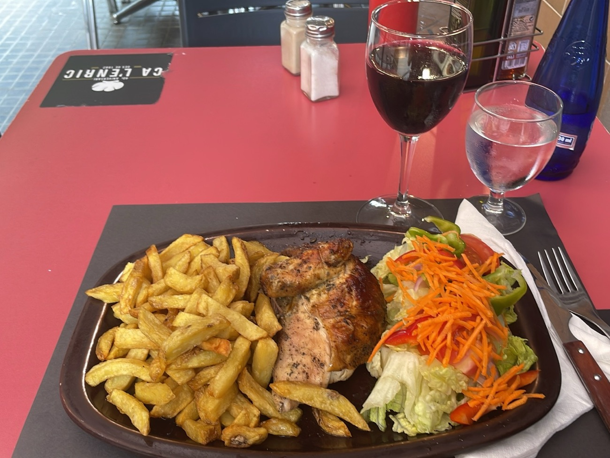
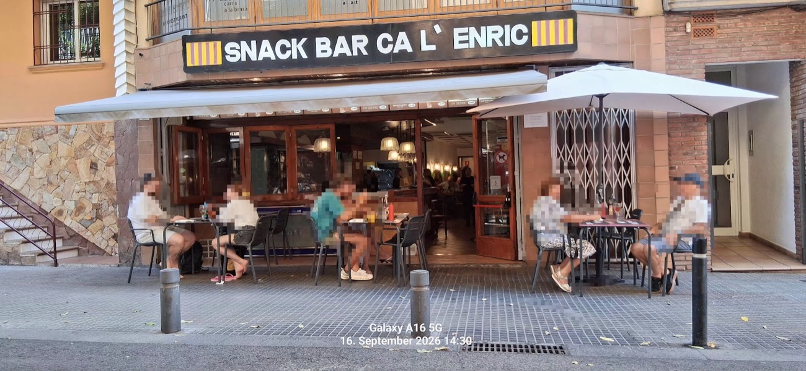

Abre Ca L'Enric
El gorro de cocinero y una fecha que se lleva con orgullo hasta en los manteles: des de 1982.
Snack bar · restaurantLloret de Mar
Raciones de las de antes, platos combinados y el pollo dando vueltas en el ast. En la Avinguda Frederic Mistral, con terraza.

L'ast · baja despacio
Interactivo · plato combinado
Elige entre los 32 combinados de la carta y la guarnición. El plato se sirve en pantalla y la comanda se imprime con el precio real, IVA incluido.
1Elige el plato
2Guarnición
IVA incluido · ¡Bon profit!
Fotos de Instagram y de nuestros clientes
Desliza la foto de arriba hacia un lado para ver la siguiente. Raciones generosas, como dicen las reseñas.
Directamente de su Instagram
Horarios, el cierre de temporada, la vuelta en marzo… La casa lo cuenta en stories. Toca una para verla a pantalla completa.
Historia

El gorro de cocinero y una fecha que se lleva con orgullo hasta en los manteles: des de 1982.

Barra, comedor y terraza en la Avinguda Frederic Mistral, 8, a dos pasos del centro de Lloret.

El 40è aniversari quedó grabado en sus avisos: «Estem de vacances… fins la propera temporada».

El nombre de la casa también juega: luce en las camisetas del club de fútbol del pueblo.

Establecimiento del Gremi de Bars i Restaurants de Lloret de Mar, con su distintivo en la puerta.

Un 4,6 de media en Google. «Comida casera y abundante con excelente servicio», resume un cliente.
Lo que dicen en Google
★★★★★
«Nos recomendaron este sitio y salimos encantados. Desde platos combinados hasta bocadillos calientes, tapas y el jugoso pollo. La escalopa, muy recomendable.»
★★★★★
«Excelente tanto la atención como la comida; además son muy amplios al servir y todo delicioso.»
★★★★★
«Comida casera y abundante con excelente servicio. La atención es cordial.»
★★★★★
«Buena comida, buen trato y bien de precio. Gracias, equipo.»
★★★★★
«Muy buenas raciones, la guarnición buenísima y muy buena atención.»
Dónde y cuándo
En invierno la casa cierra unas semanas por vacaciones; la reapertura se anuncia en Instagram.
Av. Frederic Mistral, 8 · 17310 Lloret de Mar 972 36 82 13 · reservas @calenriclloret